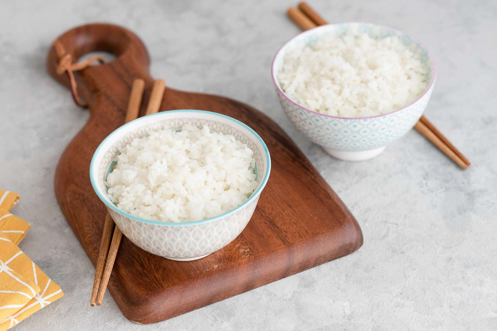

Gohan

Dish description
No japanese meal is complete without gohan - fluffy, slightly sticky rice.
Ingredients
- 300g sushi rice
- 200ml dashi (optional)
- 1tbsp mirin
- pickles,nori,katsuobushi flakes,sliced spring onions,to serve (optional)
- Rinsing and soaking your rice is key to achieving the perfect texture.Measure the rice into a bowl, cover with cold water, then use your fingers to massage the grains of rice- the water will become cloudy. Drain and rinse again with fresh water. repeat five more times until the water stays clear.
- Tip the rinsed rice into a saucepain with 400ml water, or 200ml dashi and 200ml water, bring to the boil, then turn down the heat to a low simmer, cover with a tight-fitting lid with a steam hole and cook for 15mins. Remove from the heat and leave to sit for another 15mins, then stir through the mirin. Remove the lid and give it a good stir. Serve with any or all of the optional toppings.